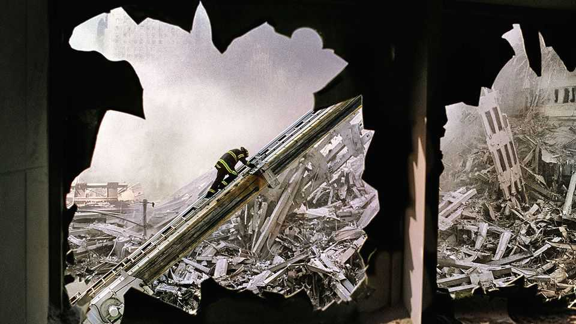
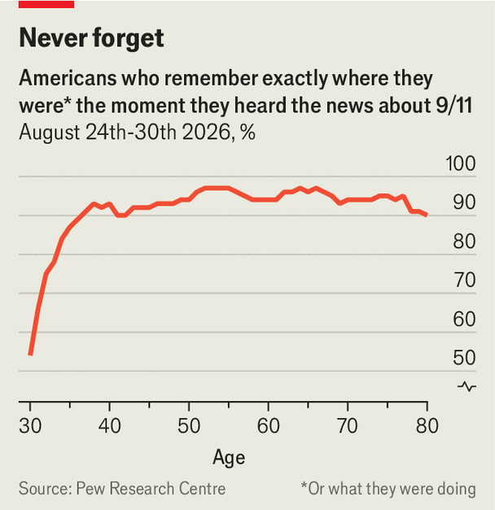
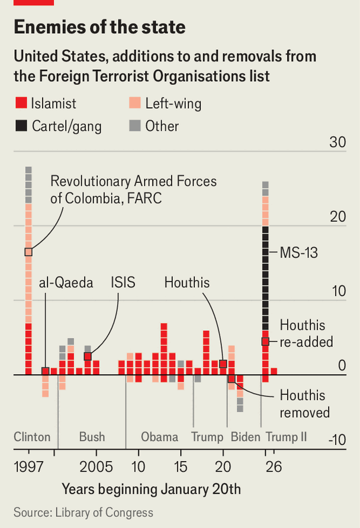

How 9/11 empowers Donald Trump’s imperial presidency
A tentative debate has started over America’s counter-terror laws

Sep 10th 2026
Twenty-five years after 9/11, the share of people with no direct recollection of the attacks is rising; just over 100m Americans, roughly a third of the population, were not alive at the time. Yet the counter-terror apparatus that President George W. Bush and Congress enacted in response—hastily drafted legal authorities to wage war, surveillance powers, permissive CIA operations and new bureaucracies—remains largely in place, even as the threat of jihadist violence has receded.

Donald Trump’s adaptation of these powers may at last be seeding a debate about correcting the overreach. According to a new YouGov poll, 48% of Americans believe the expeditionary wars and surveillance that followed 9/11 have been worth the cost. But only 37% of Democrats agree, compared with 71% of Republicans. Talk of reform is growing in some Democratic circles. “We have an opportunity to rein in some of these authorities and remake agencies that have been abused,” says Dan Herman of the Centre for America Progress, a Democrat-aligned think-tank.
America’s counter-terror regime arose initially with overwhelming support from Democrats and Republicans alike. When the hijacked planes hit the World Trade Centre and Pentagon, the nation braced for further onslaughts. Spooks fretted that al-Qaeda might use chemical, biological or even nuclear weapons. Terrorism became the primary concern of voters.
But the dreaded wave of follow-up attacks never came. America launched expeditionary wars that ultimately cost $8trn, killed an estimated 900,000 people and may have provoked more terrorism than they prevented. Yet the initial counterattack in Afghanistan, followed by focused efforts against al-Qaeda, proved remarkably successful. Since 9/11 al-Qaeda has mustered just one fatal attack inside America, when a Saudi air-force officer killed three Americans at a naval base in 2019. Sporadic terrorism, largely by self-radicalised jihadists, has killed 122 people in the country since 2001—a tiny fraction of what officials feared at the outset. Today less than 1% of Americans say that terrorism is the top issue facing the country.
The vast resources America injected into its counter-terror apparatus played a part. Congress created the Department of Homeland Security (DHS) to “secure the United States from terrorist threats or attacks”. The number of FBI joint terrorism task-forces—which fuse intelligence across federal and local agencies—ballooned from 35 to over 200 today. Better intelligence detection and sharing snuffed out countless plots. Surveillance was a factor, but the importance of sweeping powers to enable it is controversial. At the sharp end of the spear, America’s aerial and drone campaigns smashed the main jihadist groups in Pakistan and the Middle East, albeit at a staggering cost.
Underpinning Mr Bush’s “war on terror” were measures passed by Congress that remain potent tools today. Consider the Authorisation for Use of Military Force (AUMF), which permits attacks on al-Qaeda and associated groups. Presidents from both parties have stretched the AUMF far beyond what Congress intended. It has been used to conduct undeclared wars in far-flung places such as Syria, Yemen and Somalia. Last year Mr Trump invoked the AUMF to hit Islamic State targets in Nigeria, after accusing the country of failing to protect Christians.
Surveillance programmes, such as Section 702, allowed spooks to snoop on foreign suspects abroad without a warrant, sweeping up Americans’ communications in their dragnet. Other statutes broadened the scope of the Foreign Terrorist Organisation (FTO) designation and bolstered the powers of the Treasury to go after the networks financing terrorist groups.

Since returning to office, Mr Trump has cynically repurposed these tools. The president has dramatically broadened the definition of terrorism. His administration has branded a range of Latin American drug gangs as FTOs (see chart). His air campaign against suspected drug-smuggling boats in the Caribbean and Pacific has killed at least 277 people so far. Narco-terrorists are “the ISIS and al-Qaeda of the western hemisphere”, Pete Hegseth, the secretary of war, said recently, “and they should be treated as such”.
The administration has used the 9/11 toolkit to advance its domestic agenda, too. DHS has become the engine of Mr Trump’s deportation campaign, with thousands of its agents, some of whom worked in counterterrorism, reassigned to immigration enforcement. A presidential directive signed in September 2025 orders the FBI’s terrorism task-forces to track loose, left-wing movements like Antifa, which the administration has labelled “domestic terrorists”. The State Department has designated Antifa’s overseas offshoots as FTOs and pressed allies to follow suit.
The administration is also pulling powerful financial counter-terror levers. In Minneapolis, for example, federal agents used authorities created by the Patriot Act of 2001 to seize financial records from labour unions and progressive groups without warrants. In Texas, eight anti-ICE protesters were sentenced in June on spurious charges of “providing material” support to terrorists, a statute designed for al-Qaeda and ISIS financiers.
Attempts at reform have so far been embryonic. Congress let Section 702 lapse in June, in part over concerns that Mr Trump is politicising the intelligence apparatus, though the authority will run until early 2027. What happens then will test the reform caucus in Congress. Democrats would like stronger safeguards, but have been unable to break through from their minority position in the legislature.
Tim Kaine, a Democratic senator from Virginia, has called on Congress to repeal the 2001 AUMF, but has struggled to garner support. Reforming other post-9/11 agencies like DHS could also prove politically fraught. Besides, though Democrats criticise overreach while in opposition, they may be less keen to dismantle counter-terror tools upon returning to office, argues Daniel Byman of CSIS, a think-tank.
Perhaps it will take a younger congressional intake, for whom 9/11 is a hazier memory, to move things along. Americans who came of age during the past 25 years, notes Mr Herman, “are eager to push back against the abuses that we’re all seeing.” ■
Stay on top of American politics with The US in brief, our daily newsletter with fast analysis of the most important political news, and Checks and Balance, a weekly note that examines the state of American democracy and the issues that matter to voters.